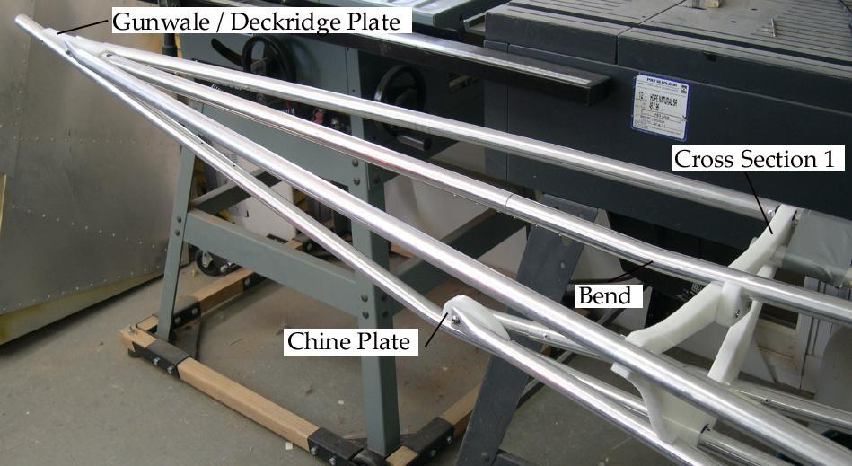

| HDPE Bow Plates | Menu Last Page Next Page |
|

Sea Ranger Bow Stringer Dimensions (Approximate)Gunwale Stringers - Gunwales are 35" long ( 2" of the 12" insert showing and included in the 35") measured form cross section 1.Deckridge stringer - The deck stringer is 32" long measured from cross section 1( no insert). The foreward deck stringer is 92" long measured from cross section 4. The deckridge tube is bent slightly at cross section 1 to allow connection to the stem plate. Chine Stringer - The chine stringers are 10" long ( 3" of the insert showing) measured form cross section 1. Keel / Bow - The end of the bow is 40" measured from cross section 1. The keel transitions into the bow 11.5" from cross section 1. Stem Plates - Two HDPE stem plates hold the stringers in place. The plates are screwed through the keel with 1" stainless self tapping screws. The chine plate is secured with 2 screws. The Gunwale plate is secured with 3. |
|